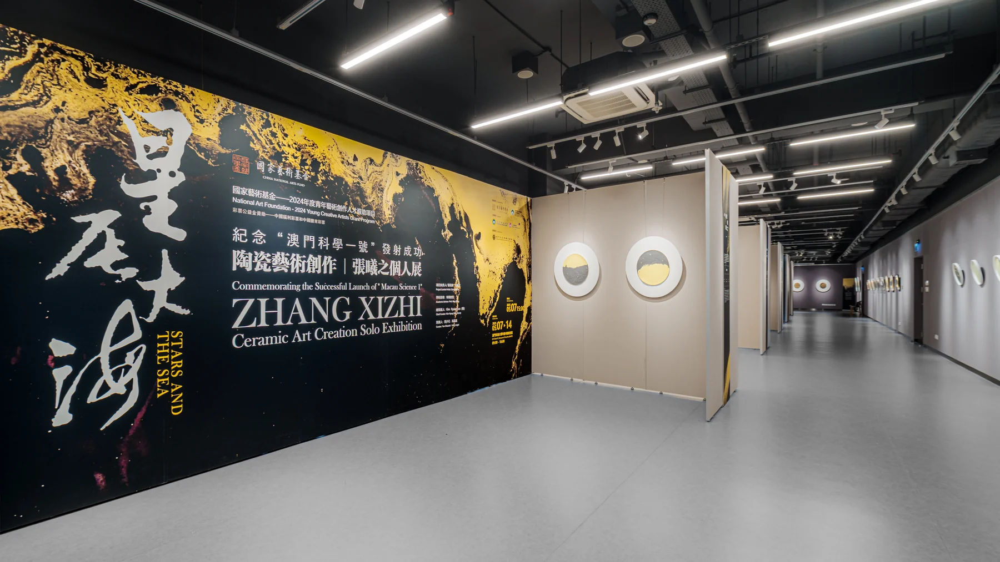
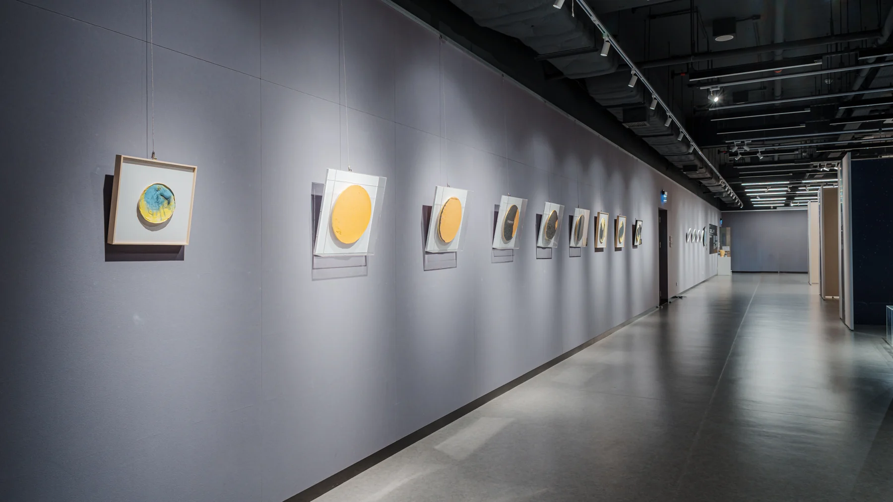
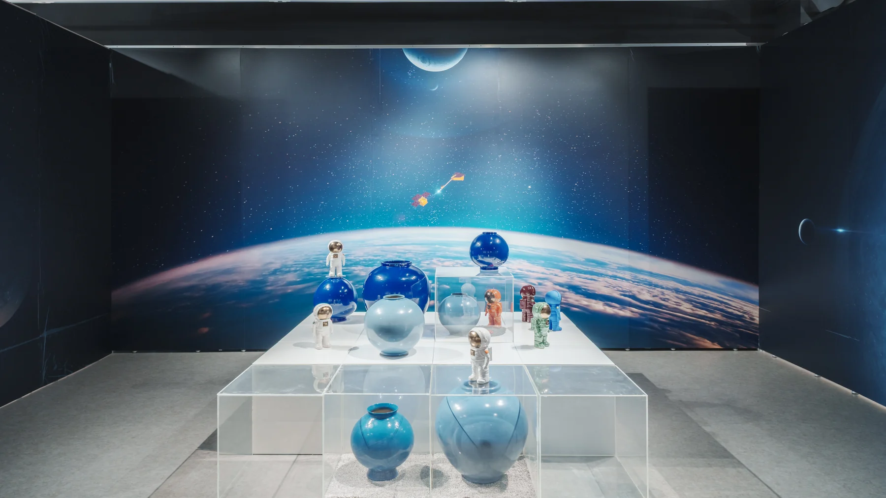
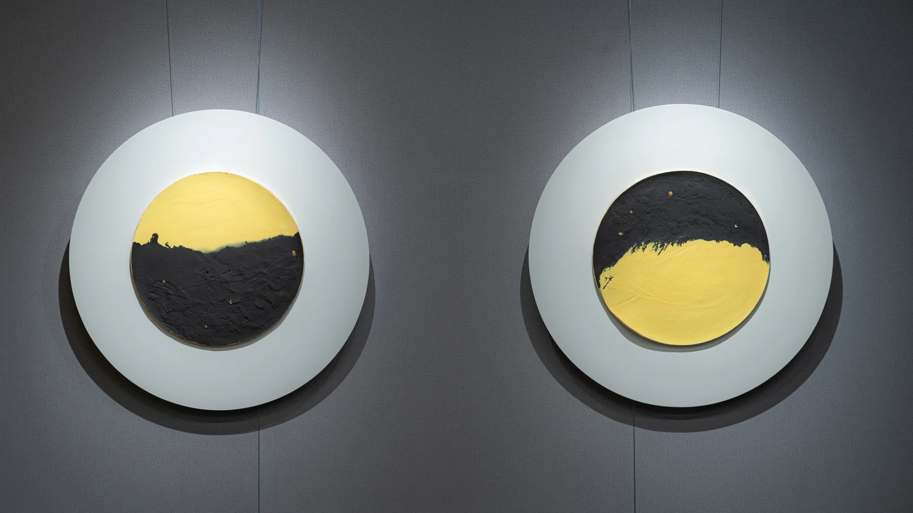
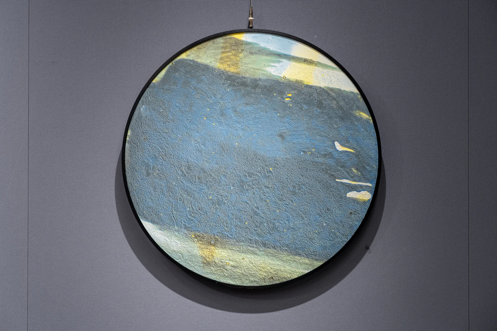
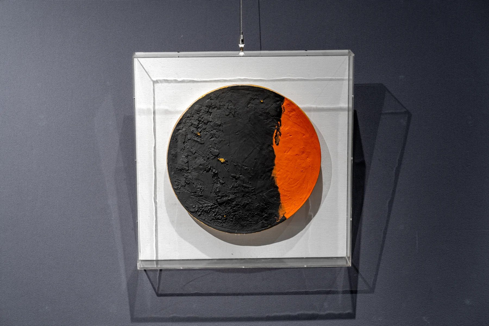
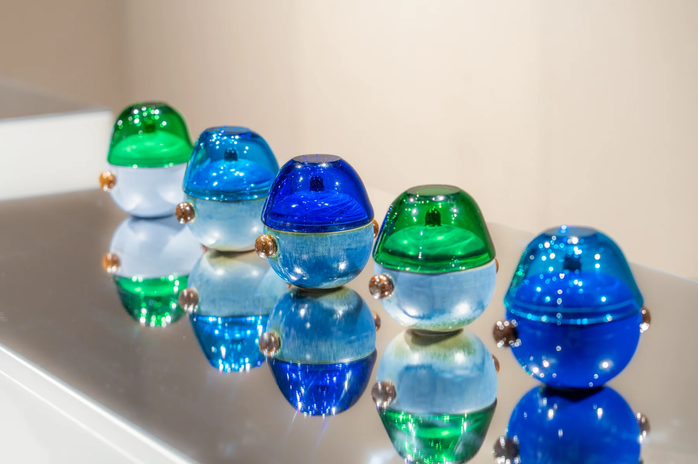
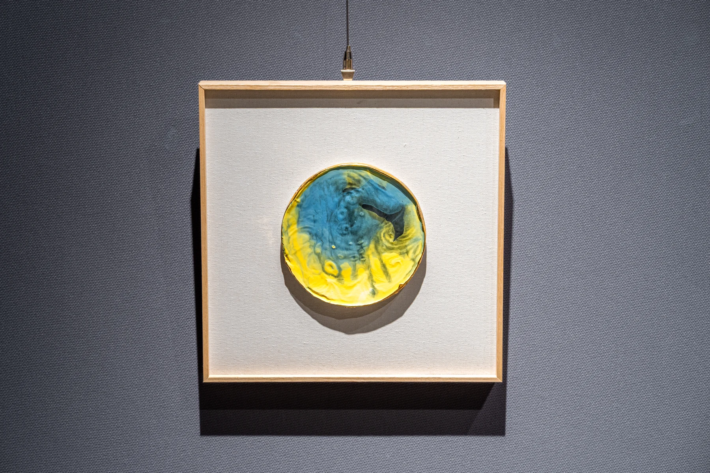
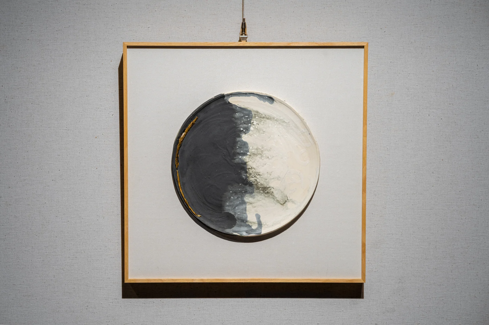
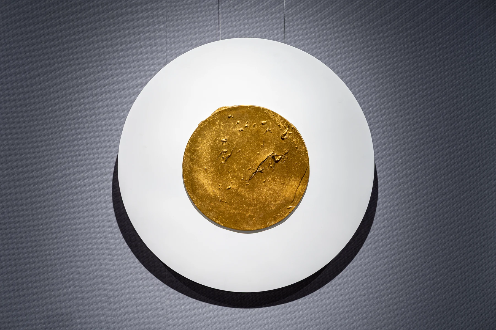

Max
Max张曦之 · 星辰大海
项目简介
《星辰大海——纪念“澳门科学一号”发射成功陶瓷艺术创作》张曦之个人展于澳门科技大学美术馆举行，由澳门科技大学人文艺术学院主办，属国家艺术基金2024年度青年艺术创作人才资助项目，并获澳门文化发展基金支持。
MaxYourWay 为项目拍摄展览环境与陶瓷作品，并制作艺术家个人形象片，呈现创作理念、作品肌理与展陈空间。
项目交付
- 展览空间与现场摄影
- 陶瓷作品及细节影像
- 艺术家个人形象片 · 完整版
相关报道
展览现场










个人形象片
完整影片 · 01:26
打开完整影片 ↗